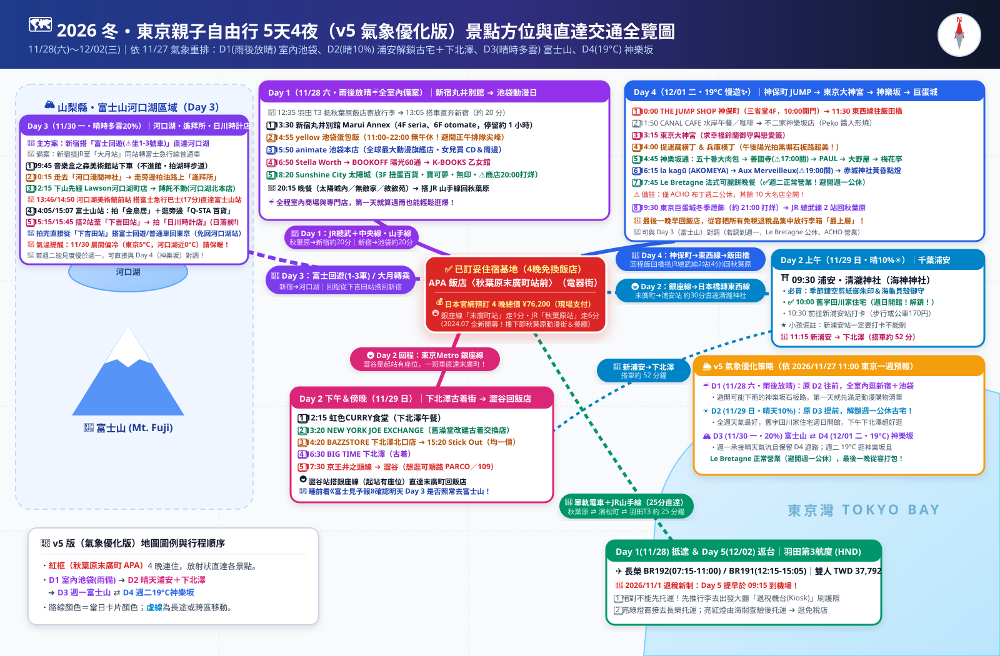

・去程 11/28 (六)：
BR192（07:15 TSA T1 ➔ 11:00 HND T3）・回程 12/02 (三)：
BR191（12:15 HND T3 ➔ 15:05 TSA T1）・雙人含稅總價：TWD 37,792
・官網 4 晚總價：76,200 日圓（含稅・當場支付）
・神動線：門口 1 分鐘銀座線「末廣町站」（澀谷一班車直達回飯店！）、走路 6 分鐘 JR 秋葉原站（2站4分鐘直達飯田橋神樂坂）！
① D1（雨後放晴）啟動全室內備案逛新宿＋池袋；② D2（週日晴10%）提前解鎖週一公休的舊宇田川家住宅；③ D3 週一富士山 ⇄ D4 週二 19°C 神樂坂（Le Bretagne 正常營業＋最後一晚從容打包）！
- ・11/28（六）雨後放晴 ➔ 改走全室內 新宿丸井別館＋池袋動漫＆太陽城
- ・11/29（日）晴天 10%（7–16°C） ➔ 全週最晴朗！提前走 浦安清瀧神社＋舊宇田川家住宅（週日開館！）＋下北澤
- ・11/30（一）晴時多雲 20%（5–16°C） ➔ 承接週日晴天氣流＋保留 D4 退路，安排 河口湖富士山
- ・12/01（二）晴時多雲 20%（6–19°C） ➔ 白天回暖 19°C 慢遊 神保町 JUMP SHOP＋神樂坂（Le Bretagne 有開！）＋巨蛋城

✈️ 已定案出發日期：11/28（六）～ 12/02（三）
機票（長榮 BR192 去 / BR191 回）與飯店（APA〈秋葉原末廣町站前〉4 晚）皆已訂妥，以下為各天星期與店家公休提醒：
🗺️ 2026 冬・東京父女 5天4夜 景點方位與直達交通路線圖
以已訂妥的「APA 飯店〈秋葉原末廣町站前〉」為住宿基地，一眼看懂 5 天所有願望景點的相對方位、直達電車與天氣彈性對調策略：

📍 點擊下方任一景點／飯店，立即切換 Google 地圖實景與導航
點擊下方任一景點皆可即時切換地圖與開啟 Google Maps 導航（v5 順序：D1 室內新宿＋池袋 ➔ D2 晴天浦安＋下北澤 ➔ D3 富士山 ➔ D4 神保町＋神樂坂＋巨蛋城 ➔ D5 羽田）：
🧭 v5 每日行程「多點串聯路線」一鍵開啟 Google Maps
在手機上點擊以下連結，可直接叫出當日所有景點串聯路線規劃：
📥 如何把專屬標記檔匯入您的「Google 我的地圖」？
同目錄下已為您建立好包含已訂飯店＋v5 版 Day 1～5 全部景點座標與備註的 2026東京5日遊_Google我的地圖匯入檔_v5.kml，只需 3 步驟即可同步到手機 Google Maps App：
- 電腦開啟 Google 我的地圖 (Google My Maps)，點選左上角「建立新地圖」。
- 在左側圖層點擊「匯入」，選擇目錄下的
2026東京5日遊_Google我的地圖匯入檔_v5.kml上傳。 - 匯入後，所有景點會自動依 v5 版 Day 1～Day 5 分類標記！打開手機版 Google Maps App ➔ 底部「已儲存」➔ 滑到最下方「地圖」，即可在東京街頭隨時看著標記走！
🗻 河口湖＆富士吉田全攻略 ＋ 天氣機動對調秘訣
🌤️ 如何利用「Day 3（11/30 週一）富士山 ⇄ Day 4（12/01 週二）神樂坂」看天氣彈性調整？
先把新宿丸井別館＋池袋（Day 2）和浦安＋下北澤（Day 3）排在前面，除了能讓女兒一到東京就先逛最期待的 animate、乙女街 K-BOOKS、太陽城與下北澤古着街外，更棒的是這兩天都是搭地鐵／JR 即可到達的行程，完全不需要事先預訂車票！
抵達東京的第一天（Day 1）晚上，查詢日本網站「富士見予報（富士山能見度指數）」：
・若 Day 4 預報能見度 8～10 級（大晴天） ➔ 照原定計畫 Day 2 池袋、Day 3 浦安＋下北澤、Day 4 富士山。
・若 Day 4 預報多雲或下雨，反而是 Day 2 或 Day 3 大晴天 ➔ 直接把富士山往前挪到晴天的那一天！（若在 JR 東日本官網訂富士回遊號，取票前可於網路免費改期一次；或直接改搭下方「備案 B：JR 到大月站轉乘富士急行線」，隨到隨搭完全免搶票！）
・對調小提醒：Day 2 的新宿丸井別館在新宿站附近，如果跟富士山日對調，回程到新宿時（約 19:00 後）可以順路再逛一下。
💡 關於「河口湖 音樂盒之森美術館」門票與不入館優勢：
美術館入館門票為平日成人 ¥1,800、高中生/大學生 ¥1,300（週六日及國定假日為成人 ¥2,100、高中生 ¥1,600；每週二、週三公休）。既然您本來沒有打算買票進去，純粹把它當作早上的「公車下車起點」並走外圍免費的湖畔步道，不僅立省 ¥3,100 門票、直接多出 1.5 小時的充裕時間，而且就算選在週二或週三（美術館公休日）去河口湖，外圍湖畔步道與紅線公車、甲府線公車也全部照常開放通行，完全不受影響！
🚆 新宿 ⇄ 河口湖／下吉田 鐵道主案與備案
- ・乘車地點：JR 新宿站 ➔ 直達河口湖站（約 1 小時 53 分）
- ・⚠️ 車廂鐵則：一定要預訂並搭乘「第 1～3 號車廂」！第 4～12 號車廂是併結的「梓號 Azusa / 甲斐路號 Kaiji」，會在大月站切離開往甲府，坐錯車廂會被載去甲府！
- ・建議去程：07:30（富士回遊 3 號）或 08:30（富士回遊 7 號）新宿發車
- ・建議回程：直接從「下吉田站」或「富士山站」上車回新宿！（例如 17:00 或 17:47 從下吉田站發車直達新宿，完全不用再走回頭路去河口湖站！）
- ・第一段（JR 中央線）：從新宿搭 JR 特急「Kaiji / Azusa」（班次極多，約 60 分鐘）或 JR 中央線快速至「大月站（Otsuki）」。
- ・第二段（富士急行線）：在大月站內順著指標刷 IC 卡（Suica/PASMO）轉乘「富士急行線」普通車（約 55 分鐘）或富士急行特急至河口湖站。
- ・優勢：就算臨時看天氣決定改期、沒買到富士回遊號，這招只多花約 15～20 分鐘，且回程從「下吉田站」搭普通車到大月站更是每 30 分鐘就有一班！
🔍 河口湖＆富士吉田 3 大實戰關鍵（含老辣妹直達公車秘訣）：
- 下山去「餺飥不動河口湖北本店」與「Lawson」的順序：從遙拜所（天空鳥居）下山回到河口淺間神社後，往美術館方向走回來的路上（707號縣道），會先經過「Lawson 河口湖町店」➔ 再往前走 5 分鐘（400m）就到「餺飥不動茶屋 河口湖北本店」！（💡 若想拍「藍底招牌＋正後方富士山」網美照，是「Lawson 河口湖站前店」，早上出河口湖站等公車時走 3 分鐘就能先拍！）
- 🚌 老辣妹推薦「河口湖美術館前站」搭公車 17 分鐘直達「富士山站」：吃完不動茶屋往湖畔走約 10 分鐘（經過音樂盒之森美術館再往南走 300m 到「河口湖美術館」門口），在「河口湖美術館前（Kawaguchiko-bijutsukan-mae）」站搭乘富士急行路線巴士「甲府線（往 富士山駅）」！下午有
12:55、13:46、14:50班次（老辣妹搭的是 14:50，因為您不進音樂盒美術館，甚至能提早搭上 13:46 那班！），車程僅 17 分鐘、車資 ¥440，免在河口湖站換車，直接坐到「富士山車站」！ - ⚠️ 防天黑提醒（11月底 16:25 日落）：因為不進音樂盒美術館，若搭上
13:46的直達公車，14:03就抵達「富士山站」了！拍完金鳥居、逛完旁邊的 Q-STA 百貨買伴手禮，15:00左右搭 2 站電車（4分鐘）到「下吉田站」拍日川時計店，時間超級充裕！（即使慢慢吃到搭14:50公車，15:07到富士山站，只要在15:35前搭車去下吉田站也完全來得及在日落前拍完！）
🏨 確定入住基地：APA 飯店〈秋葉原末廣町站前〉（電器街）
アパホテル〈秋葉原末広町駅前〉（電気街）｜東京都千代田區外神田 3-15-7｜2024 年 7 月全新開幕！
距離東京 Metro 銀座線「末廣町站（1、3號出口）」步行僅 1 分鐘、JR「秋葉原站（電器街口）」步行 6 分鐘。4 晚房價明細：11/28(六) ¥30,200、11/29(日) ¥15,000、11/30(一) ¥14,000、12/01(二) ¥17,000，合計 ¥76,200（含稅，約 NT$16,000，現場刷卡或付現皆可）！從飯店出發去 5 天景點全部超順：
✈️ 長榮航空「松山 TSA ⇄ 羽田 HND」航班明細與價格
💰 雙人來回含稅總價：TWD 37,792（平均 NT$18,896 / 人・立省 NT$1,454！）🚨 2026/11/1 日本退稅新制上路！Day 4 打包與 Day 5 羽田實戰攻略
新制首月必看重點11/28～12/02 出發剛好遇上日本退稅新制（先付含稅價、機場確認後退稅 Refund Method）上路滿月！對行程時間有「一好一壞」的影響：
取消「消耗品 50 萬上限」與「透明密封袋包裝」！在新宿丸井別館、安利美特、太陽城或藥妝店購物時，先付 10% 含稅價，店員只需掃描護照將資料上傳雲端，不用再排隊等店員封袋，市區逛街反而更省時間。
抵達羽田機場第 3 航廈時，「絕對不能先去櫃台托運行李」！必須先推著行李去出發大廳的退稅機台（Kiosk）掃護照：亮綠燈可直接去托運；亮紅燈則需當場打開行李箱給海關檢查商品。配合 BR191（12:15 起飛），請於 09:15 抵達羽田 T3！
雖然沒有透明密封袋，但退稅商品仍規定不可在日本境內拆封消耗，且須帶出境。Day 4 最後一晚打包時，請把所有退稅買的衣服、動漫周邊、藥妝集中在同一咖行李箱的最上層，萬一機場抽中紅燈，拉開拉鍊 30 秒就能驗完！
- 消費前先問店家是否有退稅；若有，結帳退稅時還是要拿出護照登記，此時店家會把消費紀錄上傳到海關。
- 到達機場後，可到退稅機台（Kiosk）刷護照：亮綠燈就可以去托運；亮紅燈就要人工檢查。
- 到達機場後，也可以用 Visit Japan Web（VJW）辦理：需先連上機場的退稅專用 Wi-Fi，在 VJW 按下確認後，效果和 Kiosk 一樣。
📶 Wi-Fi 名稱：
Customs_WiFi_For_TaxRefund
🔑 密碼：jcustoms
※ 這個部分要連上機場特定的 Wi-Fi（一般機場免費 Wi-Fi 不行）。

📍 羽田 T3 出發大廳，托運行李前先找藍白色「TAX REFUND」機台（旁邊有穿黃色背心的「税関案内 Customs Information Staff」可詢問）。
- 翻開護照到「照片資料頁」。
- 照片資料頁朝下，平放進機台中間的黑色讀取槽，對齊槽內邊框放正。
- 用手掌輕壓護照讓頁面貼平（如右圖），直到螢幕讀取成功再拿起。
- ⚠️ 不要套護照套、不要夾登機證或其他紙張。
- 螢幕先選語言（有繁體中文／英文）。
- 依上方放法放入護照。
- 確認螢幕顯示的國籍與護照號碼；不正確時請洽海關人員。
- 亮綠燈 ➔ 直接去長榮櫃台托運；亮紅燈 ➔ 推行李到海關櫃台開箱查驗後再托運。
- 👧 我和女兒各自用自己護照辦的退稅，要各刷一次自己的護照。

上面的 Kiosk 是「托運前確認」；真正領現金要等過了海關（出境審查）之後，在管制區內找「JAPAN TAX REFUND」現金退稅機台辦理。


聯絡加值稅退款業者 ➔ 擷取免稅購物紀錄 ➔ 驗證購物資料 ➔ 準備免稅購物紀錄。

每筆扣 Cash Japan 手續費（約 10%，最低 JPY 100）；支付金額四捨五入至最接近的 50 日圓。畫面提示「請拍攝此畫面」＝詳細收據，記得用手機拍下來！

Global Blue、J-TaxRefund、JPrefund（現場工作人員會拿告示牌說明）。這 3 家以外的退稅都只能退到信用卡；不確定時看購物收據上的退稅業者，或洽詢購買的店家。💡 市區結帳時可留意退稅業者，想領現金就優先選這 3 家。

結帳告知店員退稅後，用手機掃店員給的 QR Code 進 J-TaxRefund 網站。不一定要當場做，回飯店再登錄資料，明細就會自動載入；重點是要知道這筆的退稅業者是哪一家。
✅ 若已經註冊過 J-TaxRefund，之後在其他配合店家就不用再註冊和掃描，因為已經有帳號了。

不影響後續申請退稅，只要商店本身有配合退稅、金額有達標即可。

退稅可以選擇入帳到其他張信用卡。

👧 女兒的退稅可以綁我的卡，但辦理時她當然要跟在我身邊，不然可能會被認為是盜刷。

金額比較大的幾筆，記得去檢查退稅明細是否正確。
| 退稅業者 | 常見配合店家 | 機場可退現金？ |
|---|---|---|
| J-TaxRefund | UNIQLO、唐吉訶德、Bic Camera、札幌藥妝、鶴羽藥妝 | ✅ 可以 |
| JP Refund | LOFT、Hands、PARCO 等 | ✅ 可以 |
| Pie VAT | mont-bell、三井 Outlet、LaLaport | ❌ 只能退信用卡 |
| Global Blue | Yodobashi、GINZA SIX、高島屋、百貨精品 | ✅ 可以 |
※「機場可退現金？」是對照上方現場告示（只有 Global Blue、J-TaxRefund、JPrefund 三家可退現金）整理的。
- J-TaxRefund、Global Blue：❌ 不用事先註冊，直接到機場現金退稅機台刷護照即可。
- JP Refund：⚠️ 要先上 JP Refund 網站註冊，才能在機場退現金。


- 機台掃護照：到「Customs Tax Refund Kiosk（海關退稅自助機）」掃護照。
- VJW 線上確認：用 Visit Japan Web 在手機上確認（需連退稅專用 Wi-Fi）。

準備好收據和買的東西給海關看。
怎樣的人會被抽查？ 1. 單純被系統隨機抽中；2. 同品項購買過多；3. 購買總價高（例如 100 萬日圓以上）。

| 機台 | 合作的退稅業者 |
|---|---|
| Cash JAPAN | Global Blue、J-TaxRefund（J&J Tax Free）、JPrefund（須先註冊 JP 帳號） |
| Self Tax Refund | J&J Tax Free、Smart Technologies & Resources（JPrefund）、Global Tax Free-Planet、AddSmart、LINKTIVITY、IntaSect Communications |
- 看起來 Cash JAPAN 支援的是比較大間的退稅公司（Global Blue、J-TaxRefund、JPrefund 都支援），大部分情況找 Cash JAPAN 即可；Self Tax Refund 只支援其中的 JPrefund、J-TaxRefund。
- 沒有合作的退稅業者，明細就不會出現在該機台的免稅表單上；PIE VAT 不配合領現金。
- ⚠️ JPrefund 領現金仍需先註冊 QR Code；J-TaxRefund、Global Blue 無須註冊（見第 ⑦ 點）。
- 有現金退稅服務的 8 大機場：成田、羽田、關西、中部、福岡、神戶、那霸、新千歲。

不然退到的金額會比退現金少（退到信用卡可能產生匯率差額）。
| 步驟 | 💴 領現金版 | 💳 退信用卡版 |
|---|---|---|
| 01 | 結帳告知退稅，出示護照 | 結帳告知退稅，出示護照 |
| 02 | 支付含稅價格，領取單據；確認店家配合的退稅公司 | 支付含稅價格，領取單據；確認店家配合的退稅公司 |
| 03 | 抵達機場，托運前先完成海關退稅資格確認 | 抵達機場，托運前先完成海關退稅資格確認 |
| 04 | 確認通過後（過海關後），至配合的現金機台掃描護照領取日圓 | 掃 QR Code 登錄退稅公司資料；不用每筆都登錄，一間退稅公司只需註冊一次（登錄時間：消費後至離境後 90～180 天內，依退稅公司規定） |
| 05 | — | 完成資料登錄且機場審核完成，約 2 週內收到退稅款項 |